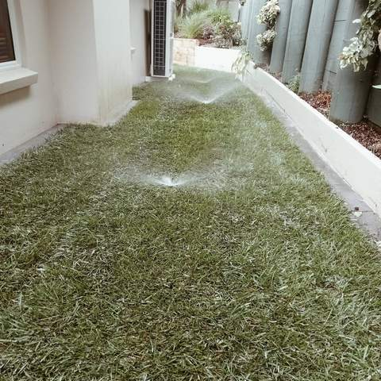
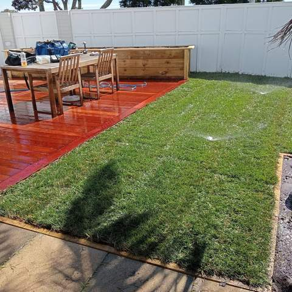
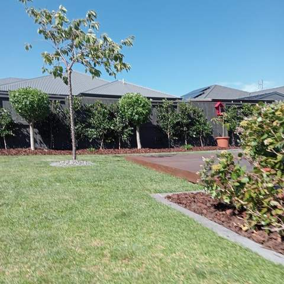
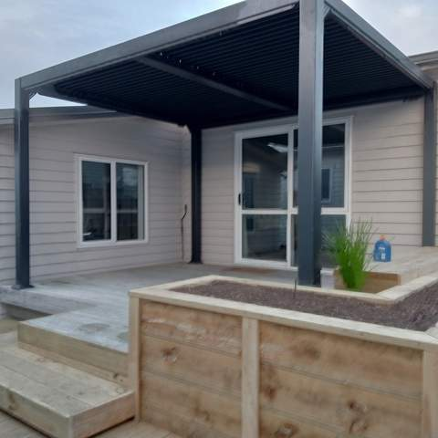
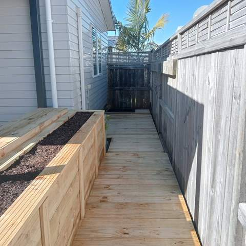

Irrigation Systems Installed Across Tauranga & the Western Bay
Pop-up sprinklers, drip lines and a controller that waters your lawn and gardens for you.
Irrigation that waters the right places
A good system puts water where plants need it and nowhere else. Lawns usually get pop-up sprinklers, which sit flush with the grass and only rise when running, so they stay out of the way of the mower. Garden beds, hedges and planter boxes do better on drip line, which delivers water slowly at the roots with very little lost to wind or evaporation.
Zones and controllers
Lawns and gardens need different amounts of water, so the system is split into zones, each with its own valve. A controller runs each zone on its own schedule, ideally early in the morning when less water is lost. Many modern controllers can be adjusted from your phone, and a rain sensor stops the system running after a downpour.
Plan it before the lawn goes down
The easiest time to install irrigation is during a landscaping job, before turf, paving or decking goes in. Pipes can be trenched in cleanly and sprinkler heads set to the finished ground level. Established gardens can still be retrofitted, with drip line run under the mulch.
Made for Bay of Plenty summers
Tauranga summers can be long and dry, and water restrictions can limit when sprinklers are allowed to run. An efficient system with drip line and a timer set to permitted hours keeps gardens alive without wasting water. Water pressure and flow are checked first so the system is designed around your supply.

Pop-up sprinkler watering a narrow lawn strip 
Newly laid lawn being watered by a sprinkler next to a hardwood deck 
Timber retaining planter beds around a lawn and concrete patio 
Lawn with metal edging, mulched beds, a young tree and a row of standard trees along a fence 
Deck steps and timber planter with grasses under a pergola 
Side-of-house boardwalk with long raised timber planter
How we work
A simple, four-step process from first call to final tidy-up.
Enquiry
Call or text Matt on 020 4006 6910, or send the quote form. A few photos of the area help.
Site visit & itemised quote
Matt comes out, measures up and talks through options, then sends a written quote broken down by item.
Build
Work is done in the right order (earthworks, walls and drainage, irrigation, then turf, decking and planting).
Tidy handover
The site is cleaned up and you get a walk-through, plus care tips such as a watering plan for new lawn.
Irrigation: common questions
Should I use pop-up sprinklers or drip line?
Usually both. Pop-up sprinklers suit lawns, while drip line suits garden beds, hedges and planters. Each goes on its own zone so it can be watered on its own schedule.
Can you add irrigation to an existing garden?
Yes. Drip line can be run under existing mulch with little disturbance. Adding sprinklers to an established lawn means trenching, so it is easiest when a lawn is being redone.
Will it work with my water pressure?
Pressure and flow are checked at the site visit and the zones are sized to suit your supply, so each zone gets enough water to work properly.
Can I control it from my phone?
Many current irrigation controllers have Wi-Fi and an app, so you can change schedules or turn the system off from your phone. Matt can talk through options when quoting.
How much does an irrigation system cost?
It depends on the size of the area, the number of zones and whether it is going in with new landscaping or into an established garden. Quotes are free and itemised.
Often combined with
Want the garden to water itself?
Get a free, itemised quote from Matt. Serving Tauranga and the Western Bay of Plenty.